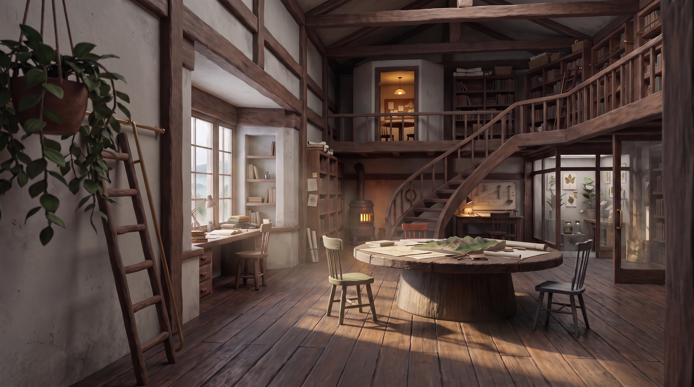

공간 통합 검수본 V2
모두 같은 바닥에 서 있는가
다섯 캐릭터의 실시간 생활 연기

카메라 보정 프리비즈
00:00 / 03:00
하울 · 01 / 05
읽으며 호흡하기 손보다 시선이 먼저 문장에 머뭅니다.기존 캐릭터 자산을 불러오는 중 · 0 / 4
먼저 볼 것전신이 온전히 보이는지, 발과 그림자가 같은 바닥에 붙는지, 몸과 얼굴이 작업 대상을 자연스럽게 향하는지 봅니다.
가까이 보기